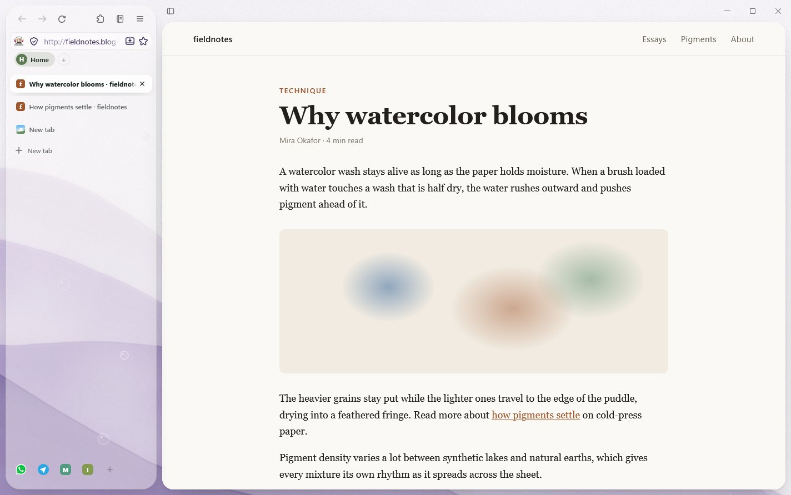
Tabs on top, or down the side.
Keep your tabs in a row across the top, or in a sidebar that leaves the page wide. Compact shows icons only, and Ctrl+\ hides everything but the page.
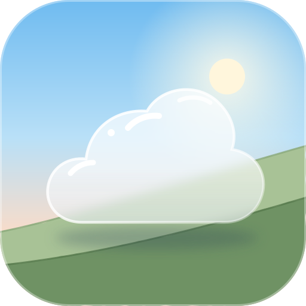
Nimbus DownloadNimbus is a free browser for Windows, built on Firefox. Your tabs sit on a watercolor that moves a little, and workspaces, link peek, a notebook and ad blocking come built in.
Download for WindowsFor Windows 11 and 10
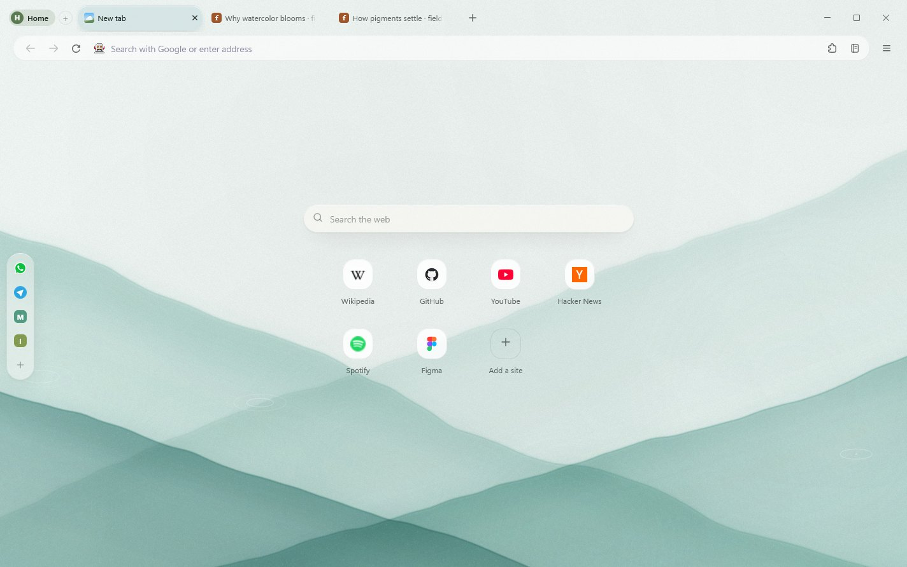

Keep your tabs in a row across the top, or in a sidebar that leaves the page wide. Compact shows icons only, and Ctrl+\ hides everything but the page.
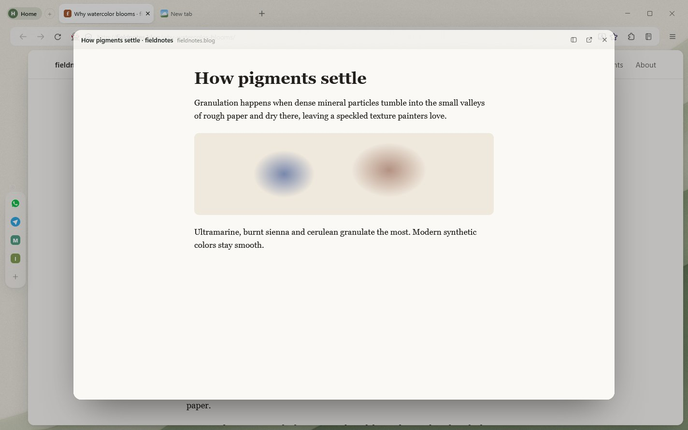
Alt+click a link and it opens in a card over the page you're reading. Close it to carry on, or keep it as a tab.
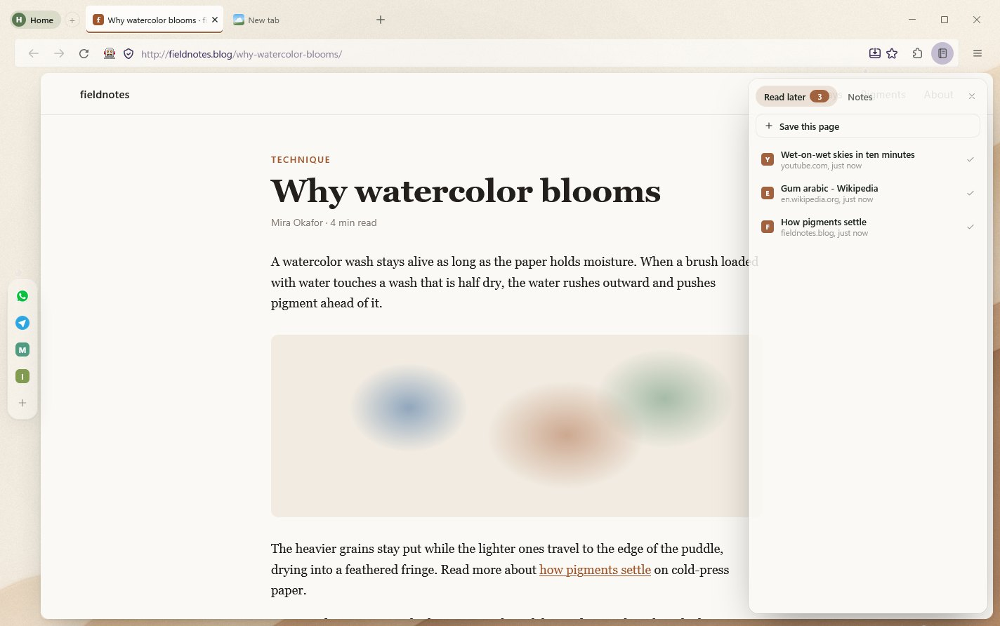
Ctrl+Shift+L opens a notebook with pages you've saved to read later and quick notes that are still there tomorrow.
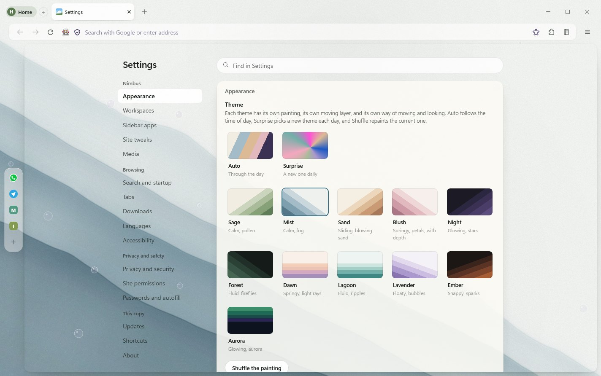
Themes, workspaces, privacy, passwords and downloads, on one page you can search.
Eleven light and seven dark, and each one moves a little. Seven are glass, not watercolor. Pick one, let it follow the time of day, or have Nimbus choose a new one every morning.
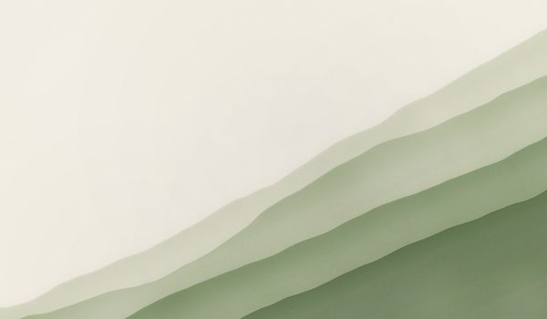
Sage Calm, with drifting pollen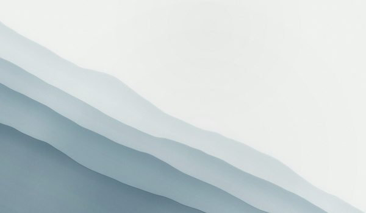
Mist Calm, with fog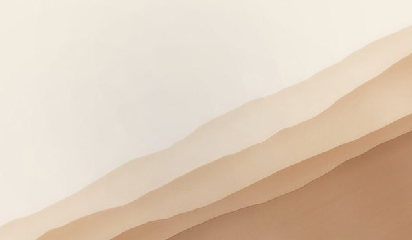
Sand Sliding, with blowing sand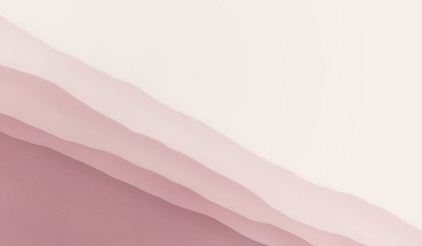
Blush Springy, with petals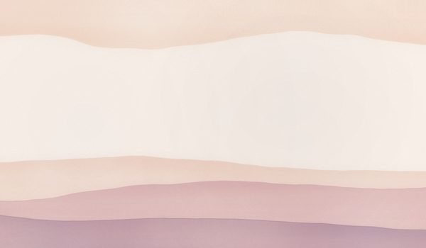
Dawn Gentle, with morning light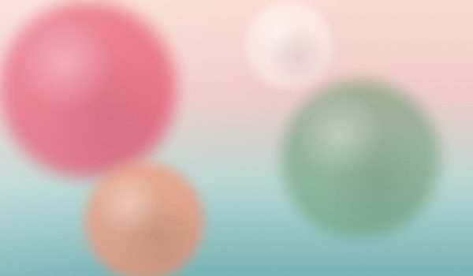
Opal Floaty, with soft lights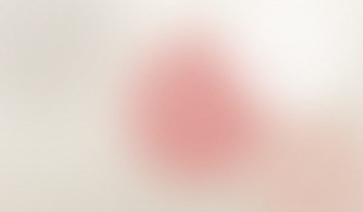
Frost Quiet, with droplets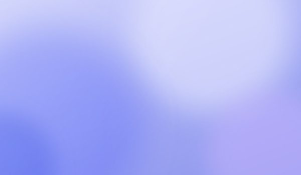
Iris Bright, with a glossy drop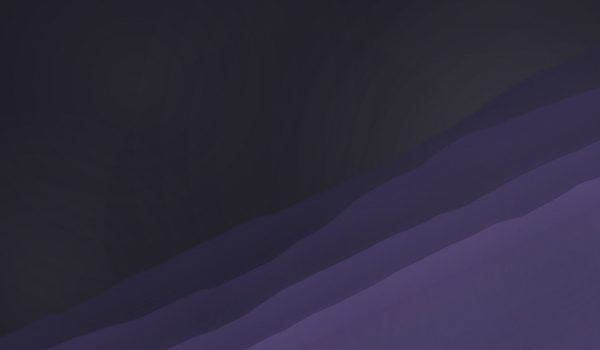
Night Glowing, with stars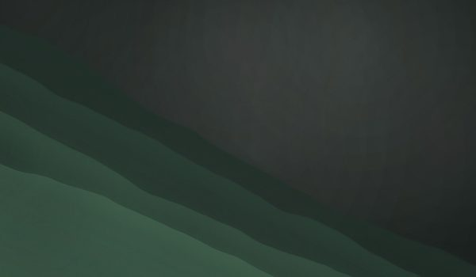
Forest Fluid, with fireflies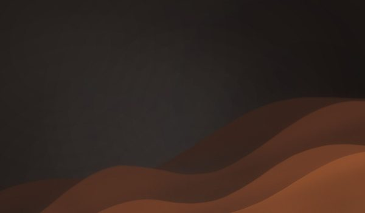
Ember Snappy, with sparks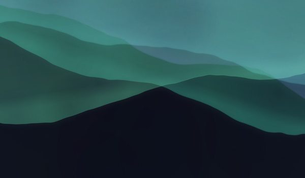
Aurora Glowing, with curtains of lightYes. There's no account to make and nothing to pay for.
Yes. Nimbus is built on Mozilla Firefox, so pages work the way they do in Firefox and Firefox add-ons install as usual. Nimbus changes how the browser looks and adds its own features on top.
The installer isn't code-signed yet, so Windows may say it's from an unknown publisher. Choose More info, then Run anyway.
It checks for a newer version once a day and tells you when there is one. Nothing installs until you say so. You can also check right away from Settings, Updates.
Yes. The first time you open Nimbus it offers to import them from Chrome, Edge, Brave and other browsers.
Uninstalling from Windows Settings keeps your history, passwords, tabs and settings, so installing it again picks up where you left off. To remove Nimbus and everything it keeps, open PowerShell and run:
powershell -Command "irm https://raw.githubusercontent.com/Primnox/nimbus/main/remove-nimbus.ps1 -OutFile remove-nimbus.ps1"
powershell -ExecutionPolicy Bypass -File remove-nimbus.ps1Add -DryRun to see what would be removed first. More about the removal script
Free, for Windows 11 and 10.
Download for WindowsThe installer isn't code-signed yet, so Windows may say it's from an unknown publisher.